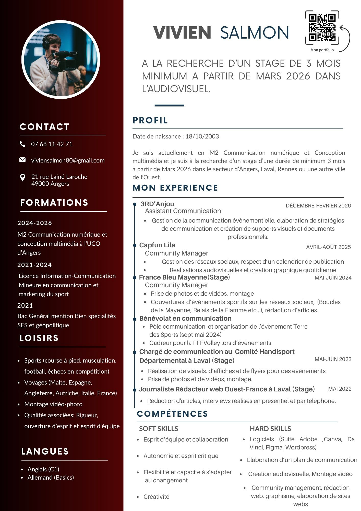

Qui suis-je ?
Découvrez mon parcours, mes compétences et ce qui m'anime au quotidien dans l'univers de la communication et de la création de contenus.

👋 Mon Profil
Je m'appelle Vivien Salmon, et je suis actuellement en Master 2 Communication Numérique et création de contenus à l'UCO d'Angers. J'y développe des compétences variées allant de la création audiovisuelle au SEO, en passant par le graphisme et la gestion de sites web.
À la recherche d’un stage pour début avril 2026, je souhaite intégrer une entreprise dans la communication sportive ou dans un autre domaine stimulant de la communication.
Originaire de Laval, je suis né en 2003 et je suis passionné de sport. J'ai pratiqué le football en club de mes 13 à 19 ans, et aujourd’hui, je m’investis dans la musculation et la course à pied, tout en suivant de près l’actualité sportive. Parallèlement, j’ai un fort intérêt pour l’audiovisuel et le graphisme, des domaines qui me permettent d’exprimer pleinement ma créativité.
✨ Mes Passions
Sport & Dépassement
Football en club pendant 6 ans (13-19 ans), pratique assidue de la musculation et de la course à pied. Suivi quotidien de l'actualité sportive.
Audiovisuel & Photo
Photographie avec mon Sony a7 III. Montage vidéo sur DaVinci Resolve, Premiere Pro et Final Cut. Créations graphiques sur Photoshop et Illustrator.
Échecs en compétition
Pratique en club depuis mon enfance et participation régulière à des tournois de bon niveau. Esprit tactique, stratégie et concentration.
Voyages & Découvertes
Curieux du monde et des cultures : découverte de l'Italie, l'Espagne, l'Angleterre, Malte, l'Autriche et exploration de nombreuses régions de France.
📹 Mon CV Vidéo
Vous voulez en savoir plus de manière dynamique ? Découvrez mon CV vidéo ci-dessous !

📩 Intéressé par mon profil ? Échangeons ensemble !
Je suis disponible pour échanger sur vos projets ou une opportunité de stage dès avril 2026.